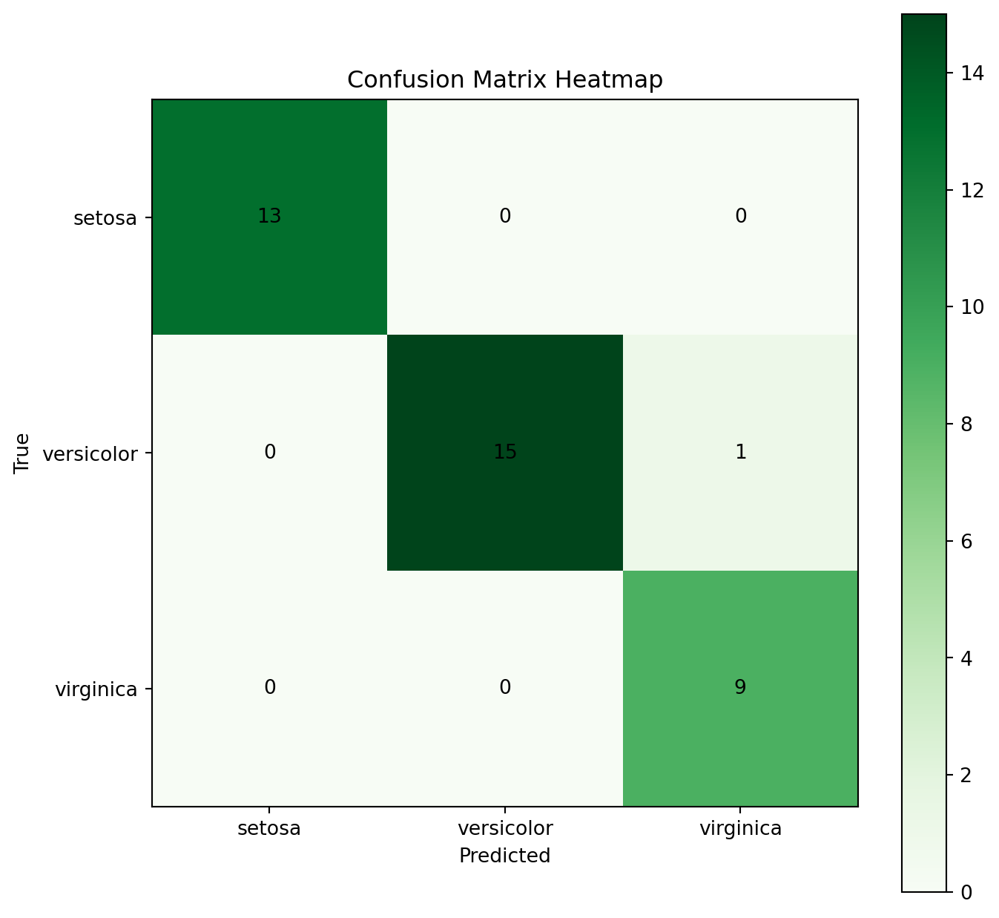

A classification algorithm is a machine learning algorithm that categorizes or assigns predefined labels or classes to data based on its features or attributes. It is a Supervised Learning Technique used to classify new observations.
The Classification algorithm uses labeled input data since it is a supervised learning technique that includes input and output data. The classification procedure (x) converts a discrete output function (y) to an input variable.
Numerous issues can be solved using classification algorithms, such as image recognition, sentiment analysis, medical diagnosis, and spam email detection. The classification algorithm to be used is determined by the nature of the data as well as the specific requirements of the problem at hand, as different algorithms may perform better for different types of data and tasks.
There are two types of learners in machine learning classification: lazy and eager learners.
Eager learners are machine learning algorithms that first build a model from the training dataset before making any prediction on future datasets. They spend more time during the training process because of their eagerness to have a better generalization during the training from learning the weights, but they require less time to make predictions.
Most machine learning algorithms are eager learners, and below are some examples:
Logistic Regression.
Support Vector Machine.
Decision Trees.
Artificial Neural Networks.
Lazy learners or instance-based learners, on the other hand, do not create any model immediately from the training data, and this is where the lazy aspect comes from. They just memorize the training data, and each time there is a need to make a prediction, they search for the nearest neighbor from the whole training data, which makes them very slow during prediction. Some examples of this kind are:
K-Nearest Neighbor.
Case-based reasoning.
However, some algorithms, such asBallTrees andKDTrees, can be used to improve the prediction latency.
Different Types of Classification Tasks in Machine Learning
There are four main classification tasks in Machine learning: binary, multi-class, multi-label, and imbalanced classifications.
Binary Classification
In a binary classification task, the goal is to classify the input data into two mutually exclusive categories. The training data in such a situation is labeled in a binary format: true and false; positive and negative; O and 1; spam and not spam, etc. depending on the problem being tackled.Logistic Regression and Support Vector Machines algorithms are natively designed for binary classifications. However, other algorithms such as K-Nearest Neighbors and Decision Trees can also be used for binary classification.
Multi-class Classification
The multi-class classification, on the other hand, has at least two mutually exclusive class labels, where the goal is to predict to which class a given input example belongs to. Most of the binary classification algorithms can be also used for multi-class classification. These algorithms include- Random Forest, Naive Bayes, K-Nearest Neighbors, Gradient Boosting, SVM, Logistic Regression.
Multi-label Classification
In multi-label classification tasks, we try to predict 0 or more classes for each input example. In this case, there is no mutual exclusion because the input example can have more than one label. It is not possible to use multi-class or binary classification models to perform multi-label classification. However, most algorithms used for those standard classification tasks have their specialized versions for multi-label classification such as- Multi-label Decision Trees, Multi-label Gradient Boosting, and Multi-label Random Forests
Imbalance Classification
For the imbalanced classification, the number of examples is unevenly distributed in each class, meaning that we can have more of one class than the others in the training data.Using conventional predictive models such as Decision Trees, Logistic Regression, etc. could not be effective when dealing with an imbalanced dataset, because they might be biased toward predicting the class with the highest number of observations, and considering those with fewer numbers as noise. The most commonly used approaches include sampling techniques or harnessing the power of cost-sensitive algorithms.
Types of Classification in Machine Learning
There are seven types of classification in machine learning and all seven models are called deep learning classification models.
Logistic Regression
In this algorithmic classification, using logistic functions, the possible outcome of a single trial is modelled. The advantage of this logistic regression is that it receive multiple variables and gives a single output variable. It works when a binary classification machine learningvariable is present.
Naive Bayes
Bayes is the theorem of algorithmic classification for every single feature. Classification and spam filtering work in many real-world documents. Getting the necessary parameters requires a small amount of training and works extremely fast compared to more experienced methods. It is the advantage of naive Bayes. It works only when there is a predictor variable. And this is the disadvantage of Naive Bayes.
Stochastic Gradient Descent
In linear models of algorithm classification, stochastic gradient descent works very easily and efficiently, supporting the function and penalties. It is structured and simple to execute. This is the advantage of stochastic gradient descent. It is hard to scale. Hence, it requires hyper-parameters. This is the disadvantage of stochastic gradient descent.
K-Nearest Neighbors
Neighbour's algorithm classification is known as lazy learning. It does not work in a general internal model but simply stores the training data. It has a simple majority vote for each point. Neighbor algorithm classification is easy to implement and contains a large number of training datasets. This is the advantage of having neighbors. The K value is high and needs to be controlled. This is the disadvantage of the neighbor's classification.
Decision Tree
The classes get the attribute of datasets to classify. The decision tree can handle both numerical and categorical datasets in algorithmic classification. It is easy to understand and visualize. This is the advantage of the decision tree. If it is not generalized well, it may create a decision-tree complex. This is the disadvantage of the decision tree algorithm classification.
Random Forest
For overfitting a model and controlling the Meta, the estimator takes the number of various decision trees to improve the classifier in a random forest. Overfitting and the random forest are better classifiers. It is the advantage of a random forest. It has a complement algorithm for classification and is difficult to implement. And this is the disadvantage of random forests.
Support vector Machine
Support vector machine takes the training data as points and spaces them out into categories by clearing the gap in this algorithm’s classification. It is high-dimensional and memory-efficient. This is the advantage of a support vector machine. The algorithmic classification is not provided directly, and they are very expensive in five-fold cross-validation. And this is the disadvantage of a support vector machine.
Below is an example where I have used the iris dataset to predict the species using linear regression model
import pandas as pdimport numpy as npimport matplotlib.pyplot as pltfrom sklearn import datasetsfrom sklearn.model_selection import train_test_splitfrom sklearn.linear_model import LogisticRegressionfrom sklearn.metrics import accuracy_scorefrom sklearn.metrics import confusion_matrix# Load the iris datasetiris = datasets.load_iris()X = iris.datay = iris.target# Split the data into training and testing setsX_train, X_test, y_train, y_test = train_test_split(X, y, random_state=0)# Train a logistic regression modelmodel = LogisticRegression()model.fit(X_train, y_train)# Make predictions on the test sety_pred = model.predict(X_test)# Generate confusion matrixconf_matrix = confusion_matrix(y_test, y_pred)# Create a DataFrame for better visualizationconf_df = pd.DataFrame(conf_matrix, index=iris.target_names, columns=iris.target_names)# Specify the plot sizeplt.figure(figsize=(8, 8))# Create a heatmap using Matplotlib's imshowplt.imshow(conf_df, interpolation='nearest', cmap=plt.cm.Greens)# Add annotations with actual valuesfor i inrange(len(iris.target_names)):for j inrange(len(iris.target_names)): plt.text(j, i, str(conf_df.iloc[i, j]), ha='center', va='center')plt.title('Confusion Matrix Heatmap')plt.colorbar()plt.xticks(np.arange(len(iris.target_names)), iris.target_names, rotation=0)plt.yticks(np.arange(len(iris.target_names)), iris.target_names)plt.xlabel('Predicted')plt.ylabel('True')plt.show()
C:\Users\shaza\AppData\Local\Programs\Python\Python311\Lib\site-packages\sklearn\linear_model\_logistic.py:460: ConvergenceWarning: lbfgs failed to converge (status=1):
STOP: TOTAL NO. of ITERATIONS REACHED LIMIT.
Increase the number of iterations (max_iter) or scale the data as shown in:
https://scikit-learn.org/stable/modules/preprocessing.html
Please also refer to the documentation for alternative solver options:
https://scikit-learn.org/stable/modules/linear_model.html#logistic-regression
n_iter_i = _check_optimize_result(

Now, I will calculate the accuracy of the model-
# Calculating the accuracy of the classificationaccuracy=accuracy_score(y_test,y_pred)*100print("Accuracy of the model is {:.2f}".format(accuracy))
Accuracy of the model is 97.37
The accuracy of the model is 97.37% as it predicted one virginica which is versicolor in reality.